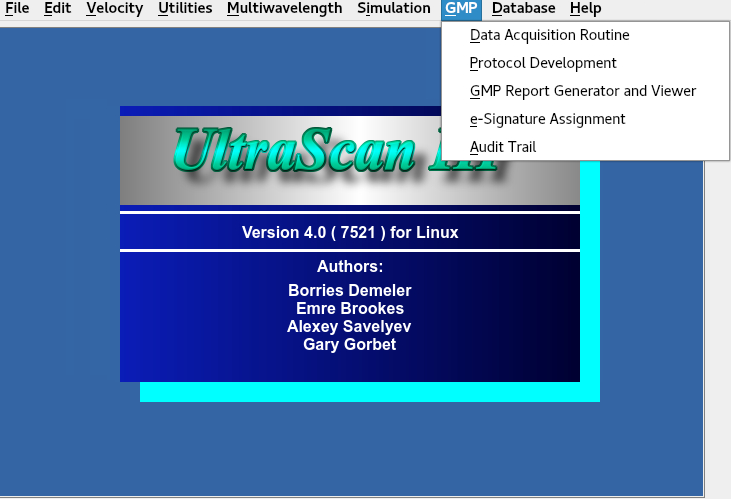

Manual
Manual
Manual
Manual
| Role | Responsibilities | Permissions | Restricted Actions |
|---|---|---|---|
| Operator | Conducting AUC experiments in accordance with standard operating procedures (SOPs), and ensuring raw data is properly collected | Setting up and conducting experiments | Modifying data after submission and approving or rejecting experiments. |
| Reviewer | Reviews experiment results for scientific accuracy and SOP compliance | Access completed experiment data, and view audit trails | Conducting experiments, modifying data, and approving or rejecting experiments |
| Approver | Verifies that the experiment conducted is compliant with SOPs, and that other compliance documentation is in order | Access completed experiment data, and view audit trails | Conducting experiments, modifying data, and validating scientific accuracy of experiments |
| Subject Matter Expert (SME) | Provides expertise on scientific accuracy and experiment validity | Access completed experiment data | Conducting experiments, and modifying data |
Role Assignment: Roles are assigned from the lab-specific UltraScan3 LIMS portal (https://uslims.aucsolutions.com/lims_servers.php) by a system administrator (Level 0 user), whose role is restricted to assigning user levels and roles. Each role is mutually exclusive to ensure a clear separation of responsibilities and maintain GMP compliance.
GMP (Button in top bar): The GMP module can be accessed using the drop-down 'GMP' menu located at the top of the UltraScan III module
